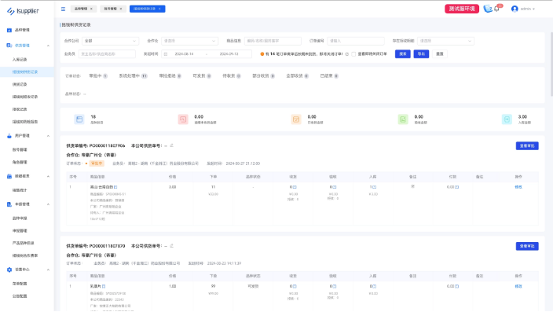
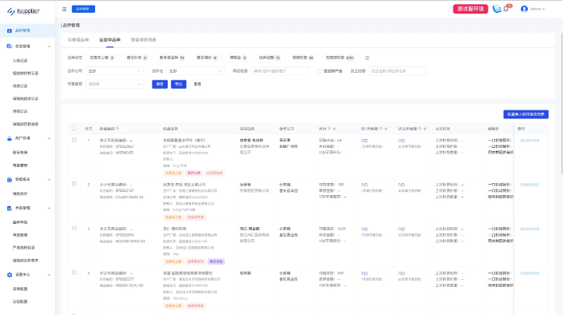

Problem
Smaller suppliers lacked nationwide warehousing, logistics, working-capital speed, and visibility. YSB simultaneously had underused capacity and needed more differentiated inventory.
Product portfolio · Pharmaceutical B2B systems
Six connected products that turned fragmented supplier, procurement, pricing, payment, compliance, and data operations into one measurable supply-chain system.
01 · Supplier ecosystem
A one-stop supply-chain platform that let small and midsize pharmaceutical suppliers sell nationwide without building their own warehouse and logistics network.


Smaller suppliers lacked nationwide warehousing, logistics, working-capital speed, and visibility. YSB simultaneously had underused capacity and needed more differentiated inventory.
Turn internal infrastructure into Supply Chain as a Service: digital contracting, supplier-controlled pricing, transparent inbound logistics, replenishment recommendations, and real-time settlement.
The B2B2B model expanded marketplace supply while suppliers retained price control and paid service fees for logistics and operating tools.
Principal Product Manager. Owned market research, roadmap, product strategy, go-to-market, and coordination across finance, procurement, operations, sales, legal, design, and a 30-engineer delivery team.
02 · Intelligent procurement
A real-time procurement and inventory decision system that replaced delayed spreadsheet planning with forecasting, recommendations, and automated replenishment.
Procurement teams used stale sales data, limited inventory indicators, and manual approval. Slow replenishment created both stockouts and excess holding costs.
Combine hourly and daily forecasting with smaller, more frequent purchase recommendations, price-range models, 40+ adjustment rules, and automated ERP workflows.
Procurement cycles moved from weeks to seconds, stock costs fell 20%, and the system maintained GSP compliance through regulatory integrations.
Senior Product Manager. Defined strategy and roadmap, aligned supply-chain operations, data science, and engineering, and led design of forecasting, recommendations, and automated procurement workflows.
03 · Data foundation
A shared source of truth for product, supplier, customer, and operational data across a fast-growing group of pharmaceutical subsidiaries.
Fragmented databases produced conflicting product and supplier identities, distorted sales analysis, warehouse cost, and compliance exposure.
Create a centralized MDM architecture with shared governance protocols, automated validation, real-time analytics, and department-specific access controls.
Procurement and inventory decisions became more reliable, inventory turnover improved 20%, and warehouse storage costs fell 15%.
Senior Product Manager. Led strategy, stakeholder discovery, MDM architecture, governance design, and rollout across product, marketing, warehouse, and quality-control teams.
04 · Supplier payments
A transparent settlement system that linked warehouse receipt, invoice recognition, reconciliation, approvals, and supplier payment into one flow.
Paper invoices, manual matching, opaque warehouse receipt, and long approval chains left suppliers waiting and internal teams reconciling errors.
Trigger payment requests from verified receiving events, digitize invoices with OCR, automate order matching, and preserve supervised checkpoints for audit.
Suppliers gained real-time delivery and payment visibility, cash-flow speed improved, and internal teams spent less time on administrative handling.
Senior Product Manager. Owned scope, timeline, supplier discovery, process redesign, and cross-functional delivery with warehouse, finance, compliance, and engineering.
05 · Pricing intelligence
A pricing and listing system that translated sales history, market prices, inventory position, and demand signals into decisions suppliers could act on.
Suppliers could not tell whether a weak result came from price, demand, brand position, or inventory. Pricing remained reactive and promotion spend was wasted.
Unify category growth, brand influence, market pricing, demand forecasts, revenue estimates, and advantage analysis in one decision interface.
Suppliers reacted faster to market changes, avoided long-held overpriced inventory, and gained more confidence in platform recommendations.
Senior Product Manager. Defined the pricing decision model, aligned internal and supplier workflows, and led implementation of forecasting, alerts, guidance, and performance tracking.
06 · Pharmaceutical compliance
A secure certificate exchange that moved regulated buyer-seller qualification from mailed paperwork to a traceable digital workflow.
Manual mailing and review took weeks, created verification errors, and left buyers and suppliers unable to see transaction readiness.
Digitize submission and validation, add legally binding electronic seals, automate reminders, and connect certificate state to the SaaS platform and YSB app.
Transactions moved sooner, administrative work fell, and every exchange added reusable verified records to the network.
Senior Product Manager. Defined platform strategy, led feature design, and coordinated legal, compliance, engineering, suppliers, and buyers through rollout.